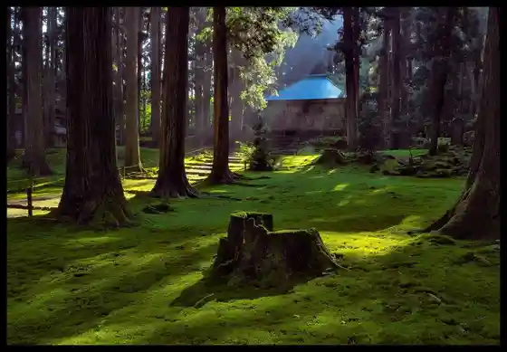
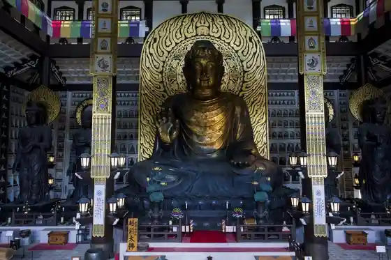

Fukui Prefectural Kyoryu Museum
Katsuyama, Fukui · 0779-88-0001 · Official / source link
Hakusan Hiraizumi Tera / Hiraizumi Tera Hakusan Shrine
Katsuyama, Fukui · 0779-88-8117 · Official / source link

Echizen Great Buddha
Katsuyama, Fukui · 0779-87-3300 · Official / source link

JAM TERRACE (JAM Terasu)
Katsuyama, Fukui · 0779-87-6109 · Official / source link
Katsuyama Di no Park
Katsuyama, Fukui · 0779-88-8777 · Official / source link
Yagai Kyoryu Museum
Katsuyama, Fukui · 0779-88-0001 · Official / source link
Hataya Memorial Museum Yumeore Katsuyama
Katsuyama, Fukui · 0779-87-1200 · Official / source link
Roadside Station Kyoryu Keikoku Katsuyama
Katsuyama, Fukui · 0779-89-2234 · Official / source link
Katsuyama Shiro Museum
Katsuyama, Fukui · 0779-88-6200 · Official / source link
Subeniashoppuraputoru
Katsuyama, Fukui · 0779-87-0086 · Official / source link
Jun Saishoku Matsuri Kagetsu Ro
Katsuyama, Fukui · 0779-87-1355 · Official / source link
Hon Tera Onsen
Katsuyama, Fukui · 0779-87-0081 · Official / source link
Toritate Yama
Katsuyama, Fukui · 0779-88-8117 · Official / source link
Sekito Yama
Katsuyama, Fukui · 0779-88-8117 · Official / source link
JAM Fukui Katsuyama Maunten Resort
Katsuyama, Fukui · 0779-87-6109 · Official / source link
no Ko Town no Kosumosu Hatake
Katsuyama, Fukui · 0779-64-5810 · Official / source link
Oya Tani Hakusan Shrine (Oya Tani no Oiwa)
Katsuyama, Fukui · Official / source link
Oku Koshidaka Hara Ranch
Katsuyama, Fukui · 0779-88-1973 · Official / source link
Howaitozaurusu
Katsuyama, Fukui · Official / source link
Katsuyama Jiotaminaru
Katsuyama, Fukui · 0779-87-0023 · Official / source link
JAM Fukui Katsuyama Maunten Resort Guriinshiizun (4 Gekka Jun 11 Gatsu Jojun)
Katsuyama, Fukui · 0779-87-6109 · Official / source link
Katsuyama Benten Sakura
Katsuyama, Fukui · 0779-88-8117 · Official / source link
Ippon Yoshihisa Ho Main Shop
Katsuyama, Fukui · 0779-87-6222 · Official / source link
Katsuyama Nature Juku
Katsuyama, Fukui · Official / source link
Hakusan Hiraizumi Tera Rekishi Tan Yu Kan
Katsuyama, Fukui · 0779-87-6001 · Official / source link
Beri Ka
Katsuyama, Fukui · 0779-64-5152 · Official / source link
e-bike Rentasaikuru | Fukui Katsuyama Kyoryu Museum no Kanko Nimo
Katsuyama, Fukui · 0779-87-1245 · Official / source link
Momijibafu no Namiki
Katsuyama, Fukui · 0779-88-8117 · Official / source link
Kokia Hatake (Roadside Station Kyoryu Keikoku Katsuyama)
Katsuyama, Fukui · 0779-89-2234 · Official / source link
Echizen Zenjo Michi
Katsuyama, Fukui · 0779-88-8117 · Official / source link
Iwaya Kannon
Katsuyama, Fukui · 0779-88-8117 · Official / source link
Bengataki
Katsuyama, Fukui · 0779-88-8117 · Official / source link
Jamusupotsuparaguraidasukuru
Katsuyama, Fukui · 090-3766-8553 · Official / source link
Mori no Nekawa no Ne IWAYA
Katsuyama, Fukui · Official / source link
Tsuji Kannon Do
Katsuyama, Fukui · Official / source link
Butan Museum
Katsuyama, Fukui · 0779-64-5278 · Official / source link
Yodogawa
Katsuyama, Fukui · 0779-88-8117 · Official / source link
Minami Bridge no Sakura Namiki
Katsuyama, Fukui · 0779-88-8117 · Official / source link
Shikatani Kawa
Katsuyama, Fukui · 0779-88-8117 · Official / source link
Toritate Yama Mizu Basho
Katsuyama, Fukui · 0779-88-8117 · Official / source link
Bambi Line
Katsuyama, Fukui · 0779-88-0364 · Official / source link